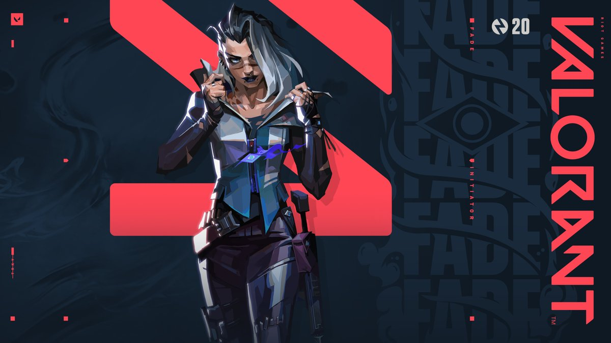

Burada sizlere "FPS Oyunları" tavsiye ediyor olacağım.
İlk tavsiye ettiğim oyun: VALORANT

Valorant, yakın gelecekte geçen takım tabanlı bir taktik nişancı ve birinci şahıs nişancı oyunudur. Oyuncular, dünyadaki çeşitli ülke ve kültürlere göre tasarlanmış bir dizi ajan karakter olarak oynarlar. Ana oyun modunda, oyuncular, her bir takımın beş oyuncuya sahip olduğu saldıran veya savunan takıma atanır. Temsilcilerin, her biri ücret gerektiren benzersiz yeteneklerinin yanı sıra öldürme, ölüm veya ani hareketler yoluyla hücum gerektiren benzersiz bir nihai yeteneğe sahiptirler. Her oyuncu her tura "klasik" bir tabanca ve bir veya birden daha fazla "özel yetenek" ile başlar. Diğer silahlar ve yetenek ücretleri, bir önceki turun sonucuna, oyuncunun sorumlu olduğu herhangi bir öldürmeye ve ani artışla yapılan herhangi bir eyleme dayalı olarak para veren bir oyun içi ekonomik sistem kullanılarak satın alınabilir. Oyunda hafif makineli tüfekler, av tüfeği, makineli tüfek, saldırı tüfeği ve keskin nişancı tüfeği gibi çeşitli silahlar bulunur. "Spectre", "Odin" ve "Vandal" gibi otomatik ve yarı otomatik silahlar, doğru atış yapabilmek için oyuncu tarafından kontrol edilmesi gereken geri tepme modellerine sahiptir.
Sıradaki oyunumuz ise: LEAGUE OF LEGENDS

League of Legends 3 boyutlu izometrik bakış açısı ile oynanır. Sihirdar Vadisi, Taktik Savaşları ve ARAM olmak üzere üç tane oyun modundan oluşur. Sihirdar Vadisi ve ARAM maçlarında, her biri beş oyuncu içeren iki takım birbirlerinin Nexus'unu (merkez) patlatmak için savaşırlar.
Bu bakış açısı değiştirilemez yalnız kamera kaydırılabilir veya yakınlaştırılabilir.
Son olarak tavsiye ettiğim FPS oyunu: COUNTER STİKE GLOBAL OFFENSİVE

Serinin önceki oyunları gibi Global Offensive, görev tabanlı birçok oyunculu birinci şahıs nişancı oyunudur. Oyuncular ilk önce görevleri tamamlamak veya düşman takımı yok etmek için teröristler veya terörle mücadele ekibi takımlarından birini seçerler. Örneğin, yıkım haritalarında (de_) teröristler bomba kurmaya çalışırken, terörle mücadele bombanın kurulmasını engellemeye veya kurulmuş bombayı imha etmeye çalışır. Global Offensive'e önceki oyunlardaki görevlere ek olarak silah yarışı (arms race) denilen bir mod eklenmiş, bu modla birlikte klasik Counter-Strike haritalarının yanında farklı haritalar da oyuna dahil edilmiştir.
Önceki oyunlarda olduğu gibi, bir tur görevlerin tamamlanmasıyla veya düşman takımın imha edilmesiyle sona erer ve yeni bir tur başlar. Tur bitmeden ölen oyuncular, dirilmek için turun bitmesini beklemek zorundadır. Oyuncular önceki turdaki performansına göre alacağı parayla silah ve ekipman satın alabilir.